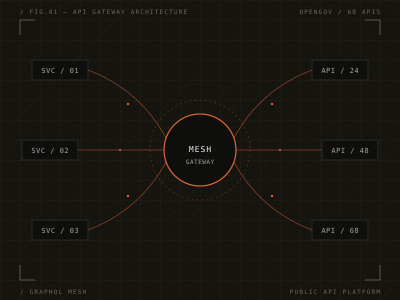
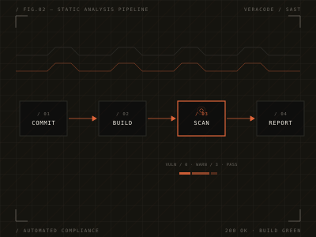
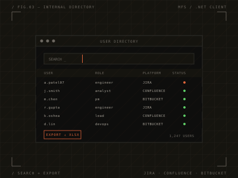

A founding engineer shipping product at Eddi, with a past life across fintech, security and biotech.
Built OpenGov's external Public API Platform from the ground up — 68 production-grade APIs with strict schema governance, a GraphQL Mesh gateway unifying microservices, and an interactive Zudoku-powered docs frontend. Owned architecture, backend, frontend, testing, and CI/CD end-to-end.

Developed an automated system that submits projects to Veracode's static-analysis engine for compliance. Built repository integration hooks and generalized the tool so any internal team could drop it into their pipeline.

Owned architecture, backend, frontend, testing, and CI/CD for an internal user directory at MFS. Shipped a search interface and Excel export so non-engineers could work with the data directly.

Building product end-to-end at an early-stage startup. Wearing every hat — frontend, backend, infra, design polish, and debugging.
Designed and shipped OpenGov's Public API Platform — 68 external-facing APIs across multiple microservices, stitched together with a GraphQL Mesh gateway. Built backend services in TypeScript and Ruby on Rails, a Zudoku-powered docs frontend, and full CI/CD pipelines. Contributed to architectural RFCs and the long-term roadmap for API exposure at scale.
Built application infrastructure on AWS EKS, Kubernetes and Docker. Wrote a custom Spring Boot interceptor for URI-pattern-based redirection, shipped Angular frontend features, and automated build/deploy pipelines with Terraform across three managed regions.
Built internal security tools supporting secure coding across product teams. Automated pipelines for Veracode's static-analysis engine and wrote tests to improve the reliability of static-analysis workflows.
Automated Jira and agile-tooling workflows with custom scripts, built a REST-based app to aggregate user info across internal systems, and ran vulnerability scans and security reporting across multiple applications.
Developed firmware-level code for components of a cell-sorting machine. Debugged real-time software systems and managed issue tracking through TRAC — my first job in software, and the one that hooked me.
If you're hiring, building something interesting, or just want to trade notes — drop me a line. I read everything.